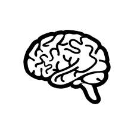

Benefícios
Registro
Registrar seus pensamentos transforma o caos interno em clareza. Ao escrever, você organiza ideias, entende padrões e passa a enxergar a própria vida com mais consciência. Com o tempo, seus registros deixam de ser apenas textos e se tornam um espelho fiel de quem você é e de como evoluiu.

Reflexão
Pensamentos não precisam desaparecer com o tempo. A aplicação transforma suas reflexões em um livro pessoal, preservando memórias, decisões e aprendizados. É a sua história escrita por você, pronta para ser revisitada, compartilhada ou simplesmente guardada como legado.